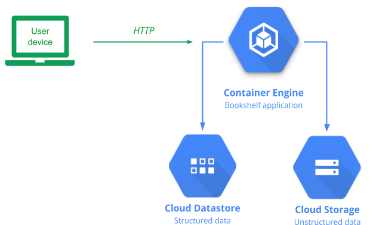
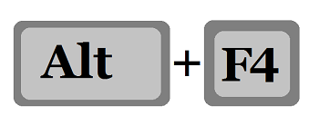
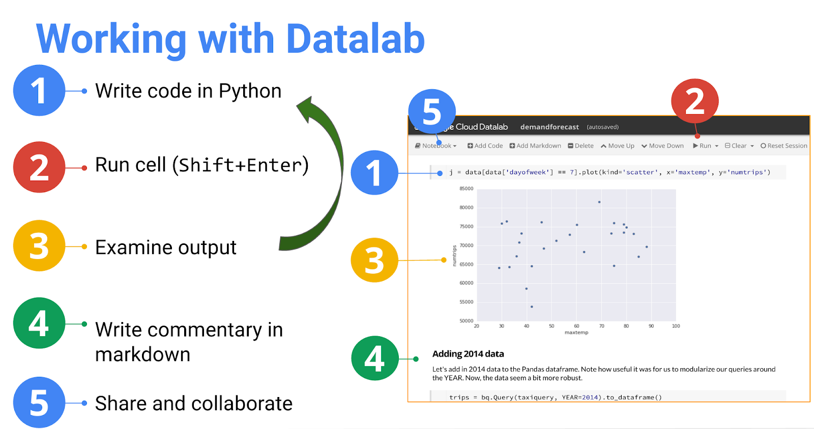

Duration is 2 min
Having a header 2 of "What you'll learn" followed by a bullet point list creates a list of checked marks. Here is an example markup:
Praesent bold cursus magna, vel scelerisque nisl consectetur et. Sed posuere italics est at lobortis. Both italics and
BOLD
!!! Donec sed odio dui. Donec ullamcorper nulla non metus auctor fringilla.
Praesent underlined, vel scelerisque nisl consectetur et. Maecenas faucibus mollis interdum. Integer posuere erat a ante venenatis dapibus posuere velit aliquet. Nulla vitae elit libero, a pharetra augue. Donec sed odio dui. Aenean lacinia bibendum nulla sed consectetur.
This sentence has a word that could be MIS_INTRE_PRETED by a markdown renderer.
Make sure that <script>alert('JS gets escaped')</script> and <em>less dangerous</em> tags also get escaped.
This step has no duration info.
Duration is 1 min
Here is an example of an image on its own line. It will be displayed as a block, full-width and zoomable.

We also support inline images. You should never press unless you know what you're doing.
Also, this is a huge image which should display reasonably:
Duration is 3 min
Buttons!
Start with a normal link.
Then set the highlight color Dark Green 1
The font color won't affect the rendered result; so feel free to make it a more readable color in this document.
What about these weirdo buttons without a link?
I'm a button too
Duration is 2 min
Here's a list:
Here's a list with sublists: NOTE: Sublists will render as a flat list!!!
What about numbers v. bullets? NOTE: Sublists will render as a flat list!!!
Duration is 3 min
Passages of text formatted with the Courier New font will be passed through as an inline <code> tag in the markup. For example, here's a block of text that includes a reference to a ClassName or ./filename.ext.
You can add these sections to your codelab by creating a single-cell table and making sure that all the text is formatted using the Consolas font. For example:
adb shell am start -a android.intent.action.VIEW \ -d "http://recipe-app.com/recipe/pierogi-poutine" com.recipe_app
The text, highlight, fill, and border color shouldn't affect the rendering.
adb shell am start -a android.intent.action.VIEW \ -d "http://recipe-app.com/recipe/pierogi-poutine" com.recipe_app
Code snippets with syntax highlighting can be added by creating a single-cell table and making sure that all the text is formatted using the Courier New font.
The following code snippet will probably not be highlighted because it doesn't have enough hints for the lexer.
<activity android:name="com.recipe_app.client.RecipeActivity"
android:label="@string/title_gizmos" >
<intent-filter android:label="@string/filter_title_viewrecipe">
<action android:name="android.intent.action.VIEW" />
<!-- URIs that begin with "http://recipe-app.com/recipe" -->
<data android:scheme="http"
android:host="recipe-app.com"
android:pathPrefix="/recipe" />
<category android:name="android.intent.category.DEFAULT" />
<category android:name="android.intent.category.BROWSABLE" />
</intent-filter>
</activity>But this same code with a DOCTYPE or "shebang" may get highlighted.
<?xml version="1.0" encoding="UTF-8" standalone="no" ?>
<activity android:name="com.recipe_app.client.RecipeActivity"
android:label="@string/title_gizmos" >
<intent-filter android:label="@string/filter_title_viewrecipe">
<action android:name="android.intent.action.VIEW" />
<!-- URIs that begin with "http://recipe-app.com/recipe" -->
<data android:scheme="http"
android:host="recipe-app.com"
android:pathPrefix="/recipe" />
<category android:name="android.intent.category.DEFAULT" />
<category android:name="android.intent.category.BROWSABLE" />
</intent-filter>
</activity>But this code, following a "Header 3" with a filename and `.xml` extension, will definitely have syntax highlighting!
<!-- Multiple Choice →
[X] Option 1
[ ] Option 2
<activity android:name="com.recipe_app.client.RecipeActivity"
android:label="@string/title_gizmos" >
<intent-filter android:label="@string/filter_title_viewrecipe">
<action android:name="android.intent.action.VIEW" />
<!-- URIs that begin with "http://recipe-app.com/recipe" -->
<data android:scheme="http"
android:host="recipe-app.com"
android:pathPrefix="/recipe" />
<category android:name="android.intent.category.DEFAULT" />
<category android:name="android.intent.category.BROWSABLE" />
</intent-filter>
</activity>Sometimes code blocks can have lines that are ridiculously long and can't easily be split.
curl https://raw.githubusercontent.com/opencv/opencv/master/data/haarcascades/haarcascade_frontalface_default.xml | gsutil cp - gs://${MYBUCKET}/haarcascade_frontalface_default.xmlDuration is 10 min
Positive information like best practices and time saving tips should be formatted as a single-cell table with a light green 3 background.
Note
Sed posuere consectetur est at lobortis. Cras mattis consectetur purus sit amet fermentum. Aenean lacinia bibendum nulla sed consectetur. Nullam id dolor id nibh ultricies vehicula ut id elit.
// This should render as code inside the infobox
do.something()
Nullam id dolor id nibh ultricies vehicula ut id elit. Cras justo odio, dapibus ac facilisis in, egestas eget quam.
Negative information like warnings and API usage restrictions should be formatted as a single-cell table with a light orange 3 background. For example:
Important: When opening an app via a deep link, the app should provide users with a First Click Free experience. This means that on the first visit to your app, a user should go directly to the relevant content, not interrupted with any interstitial content like prompts or login screens. You may prompt the user for an action after the first click. The First Click Free experience must be provided even if the app has never been launched or a user logged in.
Duration is 3 min
Who doesn't love tabular data? Notice that some of these cells contain rich content structures like links and lists.
Bookshelf version | App Engine standard runtime | Container Engine |
Runtimes | Sandboxed version of Python 2.7 | Custom Python runtime running in Docker |
Access to Datastore | ||
Access to Cloud Storage | ||
Notable advantages |
|
|
Duration is 13 min
This is text BEFORE the import statement.
When you have completed your lab, click End. Qwiklabs removes the resources you've used and cleans the account for you.
You will be given an opportunity to rate the lab experience. Select the applicable number of stars, type a comment, and then click Submit.
Note: The number of stars indicates the following:
* 1 star = Very dissatisfied
* 2 stars = Dissatisfied
* 3 stars = Neutral
* 4 stars = Satisfied
* 5 stars = Very satisfied
You may close the dialog if you don't want to provide feedback.
* For more information about Google Cloud Training and Certification, see <https://cloud.google.com/training/>
* For more Google Cloud Platform Self-Paced Labs, see <http://run.qwiklabs.com>
For feedback, suggestions, or corrections, please use the Support tab.
This text is AFTER the import statement.
The following fragment has an image in it!
Start a Datalab notebook
When your lab is ready, you will see an Endpoint appear on your Qwiklabs page. This endpoint gives you access to all of the resources you will need for this lab.
Copy the endpoint URL, then open a new browser tab/window and navigate to the endpoint.
You will be brought to Google Cloud Datalab, a tool used to deliver labs and learning. Datalab is a free, open-source notebook built on Jupyter (iPython) -- use these directions to learn how to install and use Datalab outside of Qwiklabs.
The original notebooks that are present in the Datalab container are on GitHub -- the course slides should mention the GitHub repository URL. Keep in mind, however, that you will not have access to any notebooks that you create once the Qwiklab ends.
Accept terms of service and the privacy policy in Datalab to continue.

When you start your Datalab instance, it will be preloaded with the notebooks that you will need for your class:
Duration is 73 min
You should see this if it in the "Web" environment!
Duration is 74 min
You should see this in both the Qwiklabs AND Web environment!
Duration is 84 min
FAQs are easy to add. All the author needs to do is provide an unordered list of hyperlinks and preface it with a Heading 3 header with the exact text: Frequently Asked Questions.
Link icons will be added automatically for stackoverflow.com, developers.google.com, developers.android.com and support.google.com. All links will be configured to open in a new tab.
You can configure these short survey questions to ask whatever you think is relevant to your codelab. In order to include a survey question in your codelab, add a single-cell table with a light blue 3 background. Format your question with the Heading 4 paragraph style and provide an unordered list of choices. For example:
©Google, Inc. or its affiliates. All rights reserved. Do not distribute.